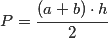

Trapez
Trapez – czworokąt mający przynajmniej jedną parę równoległych boków; (wybraną) parę boków równoległych nazywa się podstawami, pozostałe boki noszą nazwę ramionWzory
Pole (a + b) * h / 2

Kąty Suma kątów przy ramieniu jest zawsze równa 180°